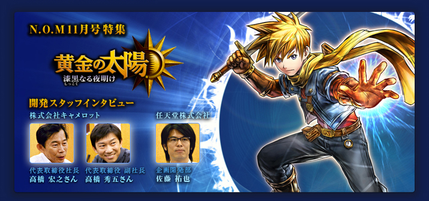
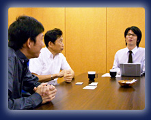
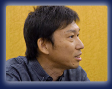
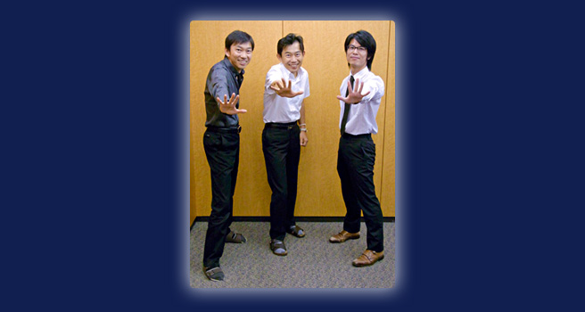

---
プレイしてみて、こだわればエナジーだったりジンだったり、クラスチェンジだったりと深く遊ぶことができますが、それらをまったく意識しなくてもサクサク進める印象でした。
高橋（宏）
このゲームで一番味わってほしいのは「謎を解く快感」です。
初心者の方は、とりあえず新しい街に着いたら一番いい装備にして、召喚攻撃だけ使ってもらえれば、中盤までは難なく進めて、そこここで普段経験できないような達成感を感じることができるんじゃないかなと思います。上級者の方は、さらにエナジーやジンのシステムを活用して、こだわったりすることももちろんできます。
初心者の方は、とりあえず新しい街に着いたら一番いい装備にして、召喚攻撃だけ使ってもらえれば、中盤までは難なく進めて、そこここで普段経験できないような達成感を感じることができるんじゃないかなと思います。上級者の方は、さらにエナジーやジンのシステムを活用して、こだわったりすることももちろんできます。
佐藤
たとえば、主人公は「地」の属性なので、まずはとにかく同じ「地」属性のジンをつけてもらえれば十分強くなります。
高橋（秀）
最初のうちはいろんなジンの組み合わせを楽しみながら、少しずつ覚えてもらえればと思います。もちろん、ボス戦の前にジンを外しておいて一気に召喚攻撃でカタをつけるとか、プレイの仕方はたくさん用意していますし、なりにくいレアなクラスなどもあったりします。
佐藤
「謎を解く快感」といえば、謎が解けた時の手ごたえが気持ち良いですよね。絵と音が一体になったリアクションがあるので、思わず「おおっ！」という声が出ちゃう感じです。自分が使ったエナジーによって、すごく大きな装置が動いたり。
高橋（宏）
不条理な苦労をしないと謎が解けないということはありませんので、安心して遊んでいただけると思います。制作側は大変でしたが（笑）。
高橋（秀）
プレイヤーの方々に「大変だろうな」ということを感じさせないで大変なことを実現させるのが、大変なんです（笑）。キャメロット史上最高にユーザーフレンドリーなゲームになったんじゃないかなと思います。
高橋（宏）
戦闘については、みなさんで自分なりのベストな方法を見つけてもらえると思います。スタッフでテストプレイしているのを見ていても、セオリーがないんです。本当にみんな違っていて。
高橋（秀）
プレイスタイルの話をすること自体が楽しかったりします（笑）。
佐藤
マリオクラブ（※4）でも、どんなパーティメンバー構成やクラスにするのがいいのか、ずっと熱く語っていました（笑）。

※4
マリオクラブ＝マリオクラブ株式会社。任天堂の開発中ソフトのデバッグやテストプレイを行う。
---
武器を使った直接戦闘をメインにした戦い方もできますよね。
佐藤
はい。一方で直接攻撃はあまり使わないで、ジンアタックやエナジーを中心にした戦略を取る人もいますね。
高橋（宏）
特殊攻撃やエナジーのモーションもひとつひとつそれぞれのキャラクターで違っているので、一通りクリアしたあとで、そういえばあのモーションや召喚攻撃のアニメーションを見てなかったな、という楽しみ方もあると思います。
高橋（秀）
謎解きではエナジーをたくさん使ってもらいたかったので、使えないところでエナジーを使って不発になってしまっても、EP（エナジーポイント）を消費しないようにしました。大事なところでEPが切れてエナジーが使えなくなる恐怖感がないので、怪しいところがあったら軽い気持ちでドンドン使ってもらえるといいと思います。いろんなことを覚えて、自分も成長していくというゲームなので。
---
たしかにEP切れで困るということがとても少ない印象でした。
高橋（秀）
リスクとリターンのバランスという意味では結構大きな決断でしたけどね。
また、「プレビジョン」という、どこでどんなエナジーが使えるのかわかるエナジーもあるんですが、それを使うかどうかも、プレイヤーが選択できます。
「解けないから進めない」ということを極力減らしたかったのと、それを押しつけるわけでもなく、自分で難易度のバランスを選択できるようにできればと。「自分は『プレビジョン』を使っていないぞ」と自慢することもできます（笑）。
また、「プレビジョン」という、どこでどんなエナジーが使えるのかわかるエナジーもあるんですが、それを使うかどうかも、プレイヤーが選択できます。
「解けないから進めない」ということを極力減らしたかったのと、それを押しつけるわけでもなく、自分で難易度のバランスを選択できるようにできればと。「自分は『プレビジョン』を使っていないぞ」と自慢することもできます（笑）。

佐藤
あとは、サクサク進むと感じていただけた要因のひとつとして、いわゆる「レベル上げ」のストレスがすごく少ないですよね。そういう意味のテンポも良いと思います。他にストレスがない点といえば、謎解きに集中してほしい場所では敵が出てこなかったり。そういうこだわりは随所に入っていると思います。
高橋（秀）
細かいこだわりの積み重ねが大きな違いになりますから。同じグラフィックの人物はひとりもいなかったりします。あとは……、世界じゅうにある「スベスベの壺」の中には、ひとつだけ「ザラザラの壺」があるんです。ぜひ探してみてください（笑）。
---
世界の中でいろんなものを動かす楽しさを見つけるゲームということなんですね。
高橋（宏）
他の人が気づいていないところを見つけられると、天下を取ったような気分になりますし（笑）。
高橋（秀）
それぞれの街の家庭料理にも、いろんな種類があります。実際にある料理だったり、オリジナルのものもあったりして。そのあたりは、本当に楽しんで作っているんだなと感じていただければなと思います（笑）。
---
最後に、読者の方に向けてひとことずつ、お願いできますか？
佐藤
本作は本当にいろんな遊び方ができて、誰でもクリアはできるけど、こだわればこだわった分の奥行きのある楽しみ方があります。こんなに遊び方に差が出るRPGはないんじゃないかと思います。ぜひ自分なりの攻略法を見つけて、遊び尽くしてほしいと思います。
高橋（宏）
ひとことで言えば「楽しいRPG」でしょうか。一般的にRPGって「忍耐する」場面がすごく多いんですが、このゲームに関してはほとんどありません。楽しいなと思ってプレイしているうちに、何十時間も経っていて、自然にクリアできているという。思い切り楽しんでいただきたいですね。
高橋（秀）
さっきも言いましたが、ストレスがないということ自体にも気づかないでプレイしてもらえるのが私たちの幸せです（笑）。ぜひすごい冒険家になって、その気持ち良さを味わってほしいですね。
---
ありがとうございました。

プレイレポート |
|
開発スタッフインタビュー |
1. 8年ぶりの続編 |